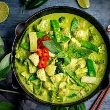
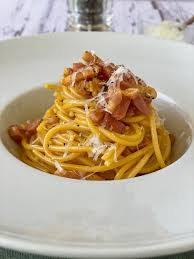
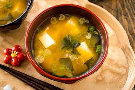

A classic Italian dish made with eggs, cheese, pancetta, and pepper. It's simple yet incredibly flavorful.
The traditional food of India has been widely appreciated for its fabulous use of herbs and
spices. Indian cuisine is known for its large assortment of dishes. The cooking style varies from region to
region and is largely divided into South Indian & North Indian cuisine. India is quite famous for its
diverse multi cuisine available in a large number of restaurants and hotel resorts, which is reminiscent of
unity in diversity.
Cuisine
Popular Dishes
Japanese:
Sushi, Ramen, Mochi.
Italian:
Pizza, Pasta, Tiramisu.
Mexican:
Tacos, Enchiladas, Guacamole.
Indian:
Butter Chicken, Biryani, Naan.
French:
Croissants, Coq au Vin, Crème Brûlée.
Indian Butter Chicken
Butter chicken, traditionally known as Murgh Makhani, is a world-renowned Indian curry celebrated for
its rich, velvety tomato-based gravy and tender pieces of marinated chicken.
Thai Green Curry

Thai green curry, or Gaeng Keow Wan ,is a staple of central Thai cuisine known for its vibrant green hue,
creamy coconut base, and aromatic heat.
Italian Carbonara Pasta

Italian pasta carbonara is a classic Roman dish celebrated for its rich,
silky sauce created from just a few high-quality ingredients
Japanese Miso Soup

Japanese miso soup (miso shiru) is a staple, traditional
Japanese soup made by dissolving miso paste (fermented soybean paste) into dashi (a savory soup stock)..